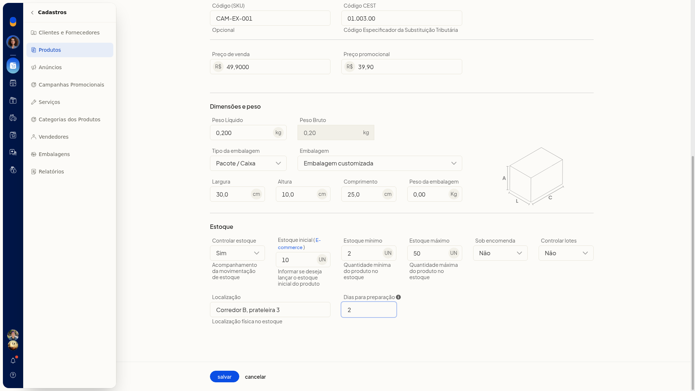
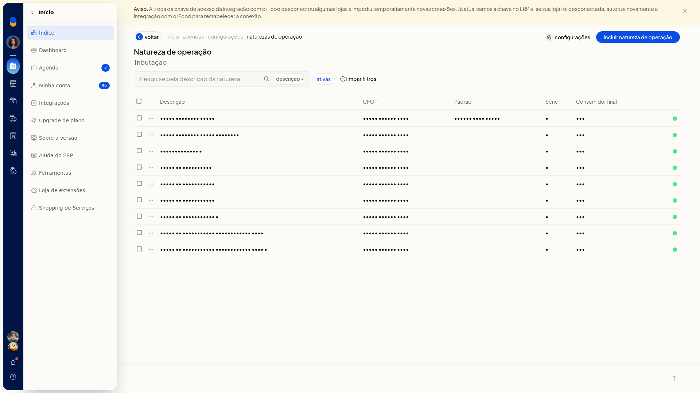
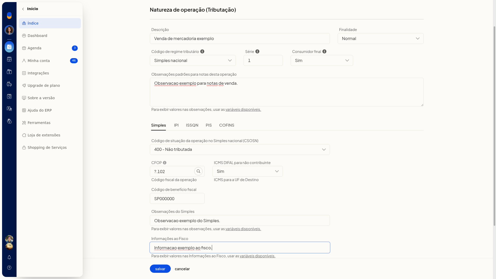
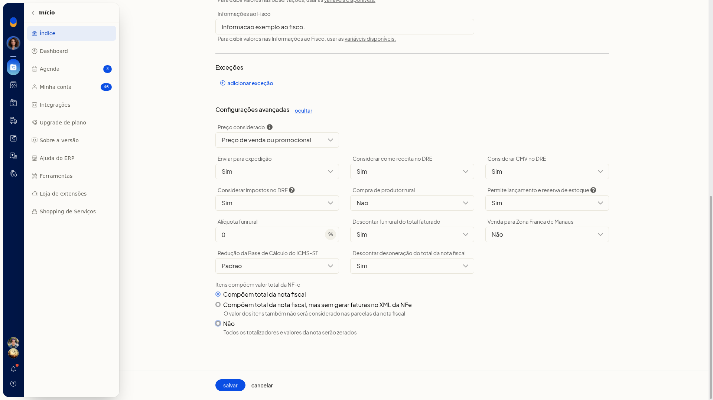
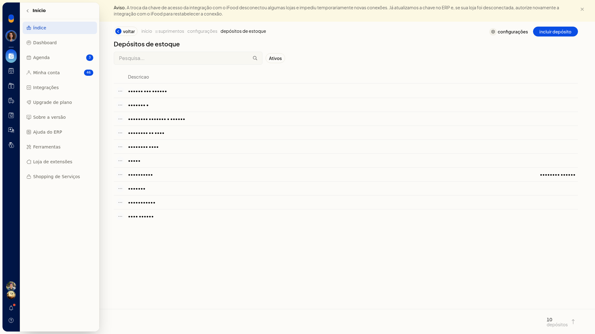
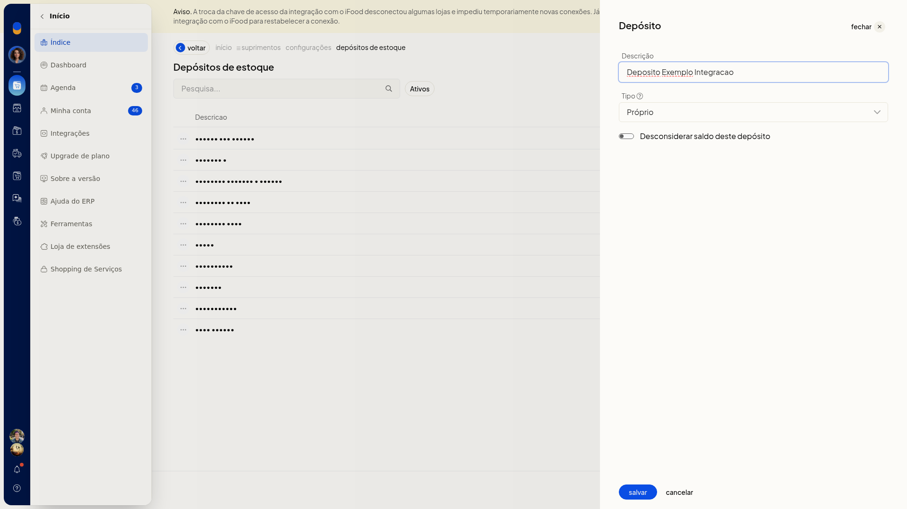
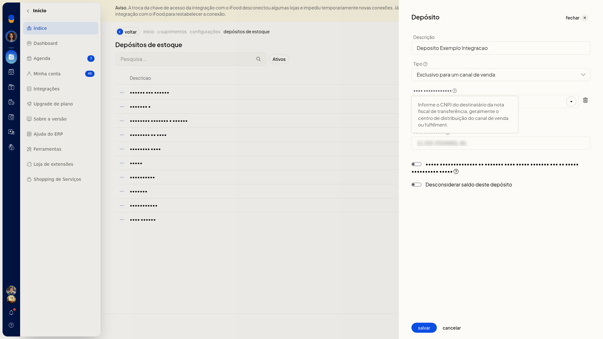
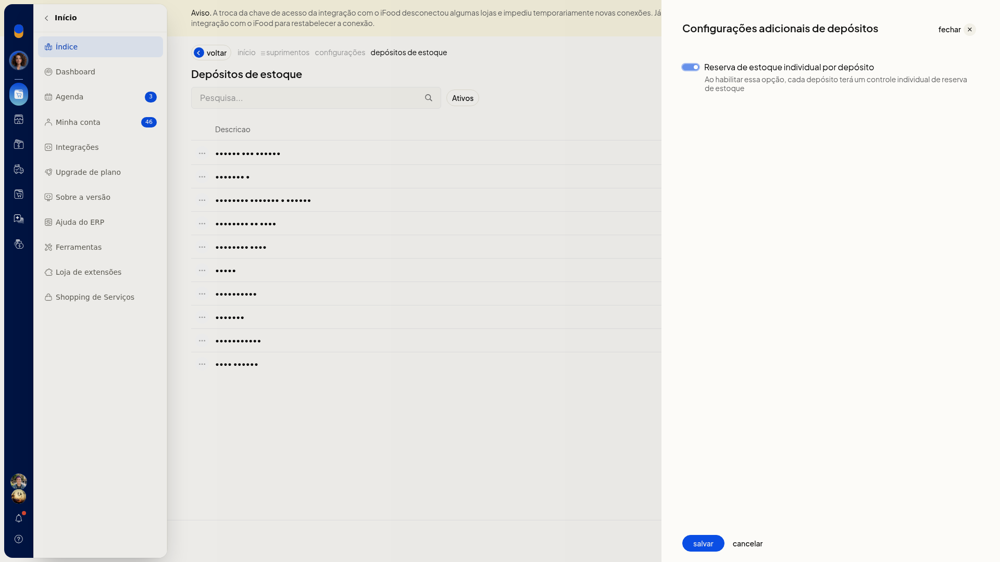

Preparar a conta antes de integrar: SKU único, natureza de operação e depósitos
Antes de ligar o ERP da Olist a um canal de venda, você pode deixar a conta pronta com o produto, a natureza de operação de saída e os depósitos de estoque.
O SKU entra no cadastro do produto. A natureza de operação de saída reúne a tributação da nota. Os depósitos organizam o saldo usado na conta.
Pré-requisitos
- O Estoque inicial do produto fica ao lado de um depósito que já existe na conta. Se ainda não houver depósito, cadastre-o antes de informar o estoque do produto.
Importante
- O SKU aparece com o rótulo Opcional. A tela não mostra uma regra de SKU único.
- Na natureza de operação e no depósito, nenhum campo exibiu asterisco de obrigatoriedade.
- A ajuda da Unidade indica que a unidade é necessária para a nota fiscal.
- Cancelar volta à lista sem incluir o registro.
Instruções
Cadastrar o produto com SKU
-
Acesse Cadastros > Produtos.

-
Use a busca por nome, SKU ou GTIN.
-
Use as abas para separar todos, simples, kits, variações, fabricado e matéria-prima.
-
Clique em incluir produto.
-
Em Dados Gerais, escolha o tipo e preencha os dados. Para descartar sem gravar, clique em Cancelar.
Identificação
- Tipo do produto: Simples, Kit, Com variações, Fabricado ou Matéria-prima.
- Nome
- GTIN
- Origem
- Unidade: a ajuda da tela indica que a unidade é necessária para a nota fiscal.
- NCM
- SKU: rótulo Opcional.
- CEST
Preços e medidas
- Preço de venda
- Preço promocional
- Peso líquido
- Tipo embalagem
- Largura
- Altura: unidade em cm.
- Comprimento: unidade em cm.
Estoque
- Controlar estoque: Sim ou Não.
- Estoque inicial: quantidade ao lado de um depósito já existente.
- Estoque mínimo
- Estoque máximo
- Sob encomenda: Sim ou Não.
- Controlar lotes: Sim ou Não.
- Localização
- Dias para preparação


Na lista, as colunas Código (SKU) e Integrações identificam o produto. O botão receber do e-commerce também fica nessa tela.
Cadastrar a natureza de operação de saída
-
Acesse Configurações > Configurações ERP > Notas Fiscais > Naturezas de operação de saída.
-
Filtre a lista por ativas, se precisar.

-
Clique em Incluir natureza de operação.

-
Preencha a Descrição e revise os dados de tributação. Para descartar sem gravar, clique em Cancelar.
Dados da natureza
- Descrição
- Finalidade: Normal, Devolução, Bonificação ou Remessa.
- Código de regime tributário: Simples nacional, excesso de sublimite, Regime normal ou MEI.
- Série: já vem preenchida ao abrir o formulário.
- Consumidor final: Sim ou Não.
- CSOSN: opções vistas 101, 102, 103, 201, 202, 203, 300 Imune, 400 Não tributada, 500 e 900 Outros.
- CFOP: já vem preenchido ao abrir o formulário.
- ICMS DIFAL para não contribuinte: Sim ou Não. A ajuda trata do ICMS para a UF de destino.
- Código de benefício fiscal
- Observações padrões
- Observações do Simples
- Informações ao Fisco

- Abra Configurações avançadas para revisar preço, expedição, DRE, funrural, Zona Franca e a composição do total da NF-e. Use adicionar exceção quando precisar de uma exceção.
Configurações avançadas
- Preço considerado: Preço de custo ou Preço de venda ou promocional.
- Enviar para expedição: Sim ou Não.
- Considerar como receita, CMV e impostos no DRE
- Compra de produtor rural: Sim ou Não.
- Permite lançamento e reserva de estoque: Sim ou Não.
- Alíquota funrural
- Descontar funrural do total faturado: Sim ou Não.
- Venda para Zona Franca de Manaus: Não, Sim com desoneração para todos, ou Sim só para origem nacional.
- Redução da base de ICMS-ST: Padrão ou Antes de somar o IPI.
- Descontar desoneração do total da NF: Sim ou Não.
- Itens compõem valor total da NF-e: compõem total da nota fiscal; compõem total, mas sem faturas no XML; ou não compõem, com totais zerados.



Cadastrar o depósito
-
Acesse Configurações > Configurações ERP > Suprimentos > Depósitos de estoque.
-
Use a busca Pesquisa... e o filtro Ativos ou Inativos.

-
Clique em Incluir depósito.

-
Informe a Descrição e o Tipo. Próprio vale para os canais de venda e é compartilhado entre eles. Exclusivo para um canal de venda é o tipo de depósito externo, em geral fulfillment.


-
No tipo exclusivo, informe CNPJ destinatário e, se for o caso, CNPJ Remetente. O CNPJ destinatário é de quem recebe a nota de transferência, em geral o canal ou o centro de distribuição. No modelo unificado de várias empresas, o CNPJ Remetente é validado com o CNPJ destinatário para identificar o depósito da entrada.
-
Use adicionar outro CNPJ quando precisar de mais de um. Marque Criar transferências de estoque para notas fiscais com os CNPJs informados acima somente se quiser essa criação. Esse controle aparece só no tipo exclusivo.
-
Marque Desconsiderar saldo deste depósito somente se esse saldo não deve entrar na conta. Para descartar sem gravar, clique em Cancelar.



Ajustar a reserva de estoque por depósito
-
Em Depósitos de estoque, clique em Configurações.
-
Leia Reserva de estoque individual por depósito e o texto de ajuda sobre o controle individual da reserva. Para sair sem alterar, clique em Cancelar.

Consultar o estoque por depósito
-
Acesse Suprimentos > Controle de Estoques.
-
Abra o filtro depósito e escolha Todos ou um depósito da conta. O saldo exibido fica associado ao depósito escolhido.
-
Use Transferir entre depósitos se quiser iniciar uma transferência. Cancele antes de confirmar se não for concluir a transferência.

Informações adicionais
O depósito padrão fica marcado na lista
Um depósito existente pode aparecer marcado como Depósito Padrão. No menu da linha, as ações são Inativar depósito e Tornar depósito padrão.

A lista de depósitos não mostrou importar planilha
Em Depósitos de estoque, a inclusão vista é Incluir depósito. Mais ações aponta para as configurações de depósitos, que abrem a reserva individual.